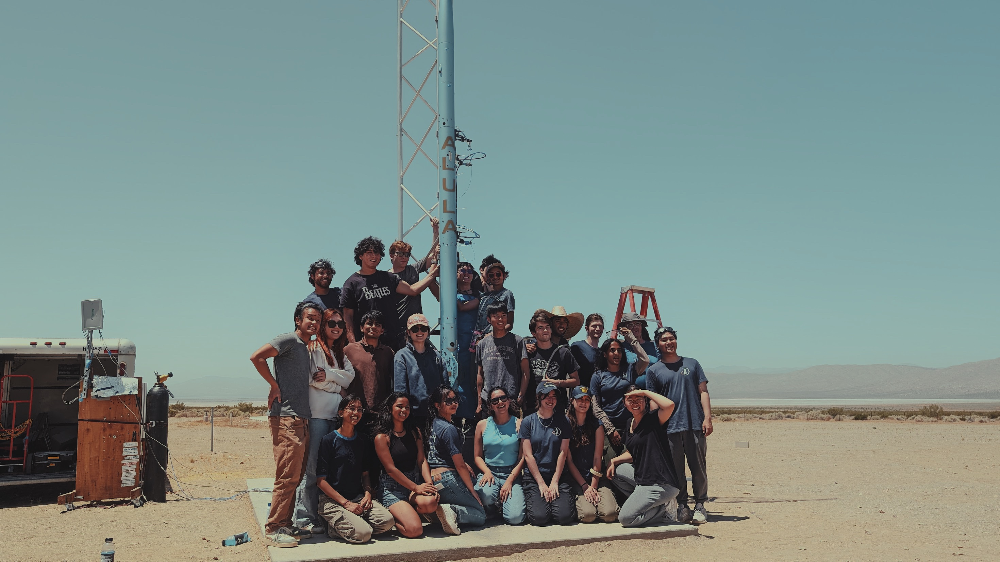

ALULA

Our first-ever flyable liquid-powered rocket is currently in the testing and optimization phase! Our airframe and recovery teams have completed their preliminary designs and are working to physically test their conceptual component assemblies on the ground, validating our analysis of in-flight structural dynamics. On the propulsion front, we’re working on scaling our hotfire-tested LOX/ethanol development engine into the flight vehicle space and energy requirements envelope(integrated hotfire tests ahead!). The avionics team is shifting focus from propulsion ground support build-out to flight module design, including Printed Circuit Board component/stack optimization, onboard harnessing and power distribution.
As we continue to integrate subscale projects between each subsystem, we’re working hard to maintain thrust and flight simulation accuracy to reflect the predicted physics of launch. We are currently on schedule to launch this foundational liquid-powered rocket in Spring 2024 in the dollar-per-foot competition at the Friends of Amateur Rocketry launch site in Southern California. Stay tuned for more videos!